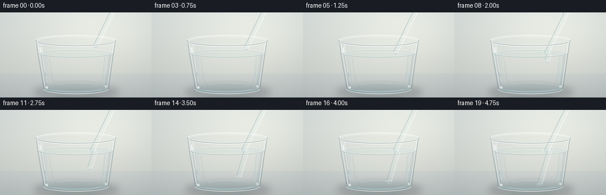
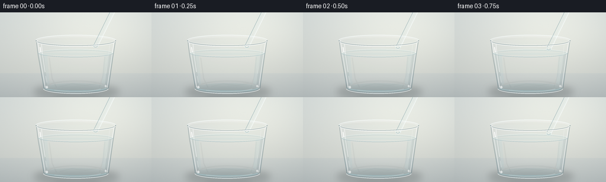

CODING AGENTS AS PIXEL WORLD MODELS
traex/GPT-5.6-Sol · phygen_071
点击播放 · 原生 RGB 像素
逐轮保存的候选
回放视频、检查图与代码变化。
每份候选均可单独播放。实际图片检查记录在下方工具轨迹中。
候选 01播放与检查图
点击播放 · 原生 RGB 像素


展开代码变化
--- 上一保存版本
+++ 本次保存版本
@@ -0,0 +1,218 @@
+from pathlib import Path
+import json, math
+import numpy as np
+from PIL import Image, ImageDraw, ImageFilter
+import artifact_io
+
+CASE_DIR = Path(__file__).resolve().parent
+SPEC = json.loads((CASE_DIR / "task_spec.json").read_text())
+W, H = SPEC["width"], SPEC["height"]
+N = SPEC["frames"]
+S = 4
+w, h = W*S, H*S
+rng = np.random.default_rng(7142)
+
+def sc_box(b): return tuple(int(round(v*S)) for v in b)
+def pts(arr): return [(int(round(x*S)), int(round(y*S))) for x,y in arr]
+def rgba_layer(): return Image.new("RGBA", (w,h), (0,0,0,0))
+
+def line(draw, xy, fill, width=1, joint="curve"):
+ draw.line(pts(xy), fill=fill, width=max(1,int(round(width*S))), joint=joint)
+
+def ellipse(draw, box, fill=None, outline=None, width=1):
+ draw.ellipse(sc_box(box), fill=fill, outline=outline, width=max(1,int(round(width*S))))
+
+def arc(draw, box, start, end, fill, width=1):
+ draw.arc(sc_box(box), start=start, end=end, fill=fill, width=max(1,int(round(width*S))))
+
+def composite(base, overlay):
+ return Image.alpha_composite(base, overlay)
+
+def background(frame_i):
+ yy, xx = np.mgrid[0:h, 0:w]
+ # Soft daylight studio background: warm at right, cooler at left.
+ nx, ny = xx/w, yy/h
+ radial = np.exp(-((nx-.66)**2/.20 + (ny-.18)**2/.28))
+ vignette = ((nx-.5)**2 + (ny-.48)**2)
+ arr = np.empty((h,w,3), dtype=np.float32)
+ arr[...,0] = 219 + 19*radial - 17*ny - 24*vignette
+ arr[...,1] = 224 + 17*radial - 19*ny - 21*vignette
+ arr[...,2] = 221 + 13*radial - 22*ny - 18*vignette
+ # Matte tabletop starts behind the lower glass.
+ horizon = 103*S
+ table = yy > horizon
+ depth = np.clip((yy-horizon)/(41*S), 0, 1)
+ arr[...,0] -= table*(7 + 8*depth)
+ arr[...,1] -= table*(5 + 7*depth)
+ arr[...,2] -= table*(2 + 5*depth)
+ # Nearly imperceptible sensor grain prevents flat synthetic fields.
+ noise = rng.normal(0, .65, (h,w,1))
+ arr += noise
+ return Image.fromarray(np.clip(arr,0,255).astype(np.uint8), "RGB").convert("RGBA")
+
+def draw_shadow(im):
+ lay = rgba_layer(); d = ImageDraw.Draw(lay)
+ ellipse(d, (57,124,201,145), fill=(56,66,67,70))
+ ellipse(d, (78,128,184,140), fill=(30,39,42,52))
+ lay = lay.filter(ImageFilter.GaussianBlur(6*S))
+ return composite(im,lay)
+
+def draw_glass_and_water_back(im, frame_i):
+ # Very subtle body of the empty glass, preserving background clarity.
+ body = rgba_layer(); d = ImageDraw.Draw(body)
+ d.polygon(pts([(61,47),(195,47),(183,130),(74,130)]), fill=(225,241,242,18))
+ # Cool crystal-clear water volume, tapered with the tumbler.
+ d.polygon(pts([(65,69),(191,69),(182,128),(74,128)]), fill=(170,218,229,27))
+ # A weak luminous center and darker refracted bands at sidewalls.
+ d.polygon(pts([(80,72),(176,72),(171,125),(84,125)]), fill=(235,250,249,12))
+ d.polygon(pts([(65,70),(74,72),(80,126),(73,127)]), fill=(67,125,145,23))
+ d.polygon(pts([(191,70),(183,73),(177,126),(183,127)]), fill=(55,110,133,26))
+ # Bottom water lens.
+ ellipse(d, (73,119,183,137), fill=(157,213,224,24), outline=(248,255,255,35), width=.8)
+ im = composite(im, body)
+
+ # Caustics and refracted background traces in the water.
+ ca = rgba_layer(); cd = ImageDraw.Draw(ca)
+ line(cd, [(83,77),(88,112),(95,127)], (246,255,252,42), .75)
+ line(cd, [(177,76),(174,107),(168,127)], (247,255,255,33), .65)
+ line(cd, [(101,126),(121,121),(144,124),(166,120)], (235,255,255,25), .7)
+ arc(cd, (80,116,178,137), 192, 345, (242,255,255,33), .8)
+ ca = ca.filter(ImageFilter.GaussianBlur(.45*S))
+ return composite(im, ca)
+
+def tube_segment(im, a, b, underwater=False, cap=True):
+ """A transparent hollow plastic tube with true background transmission."""
+ ax,ay=a; bx,by=b
+ dx,dy=bx-ax,by-ay
+ ln=max(1e-6, math.hypot(dx,dy))
+ nx,ny=-dy/ln,dx/ln
+ width=8.2 if not underwater else 8.8
+ # Refraction inside tube: a lightly shifted copy of whatever lies behind it.
+ mask = Image.new("L", (w,h), 0); md=ImageDraw.Draw(mask)
+ md.line(pts([a,b]), fill=84 if not underwater else 66, width=int(width*S))
+ shifted = Image.new("RGBA", (w,h), (0,0,0,0))
+ # shift source across tube normal to make the plastic visibly refractive
+ offx=int(round(nx*1.25*S)); offy=int(round(ny*1.25*S))
+ shifted.alpha_composite(im, (offx,offy))
+ refr = Image.new("RGBA",(w,h),(224,246,249,0))
+ mixed = Image.blend(shifted, refr, .10 if underwater else .06)
+ mixed.putalpha(mask)
+ im = composite(im,mixed)
+
+ lay=rgba_layer(); d=ImageDraw.Draw(lay)
+ # faint body haze
+ line(d,[a,b],(219,241,244,30 if not underwater else 21),width)
+ # Two distinct plastic walls, with asymmetric specular highlights.
+ for side, col, wid in [(-1,(250,255,255,185 if not underwater else 122),1.05),
+ (1,(92,132,143,125 if not underwater else 100),.85)]:
+ o=(nx*width*.43*side, ny*width*.43*side)
+ line(d,[(ax+o[0],ay+o[1]),(bx+o[0],by+o[1])],col,wid)
+ o=(nx*width*.22,ny*width*.22)
+ line(d,[(ax-o[0],ay-o[1]),(bx-o[0],by-o[1])],(255,255,255,84 if not underwater else 55),.55)
+ if cap:
+ # Elliptical closed end; its dark inner crescent makes insertion direction legible.
+ cx,cy=bx,by
+ ellipse(d,(cx-width*.52,cy-width*.35,cx+width*.52,cy+width*.35),
+ fill=(215,239,243,28), outline=(244,255,255,170 if not underwater else 115), width=.85)
+ arc(d,(cx-width*.43,cy-width*.27,cx+width*.43,cy+width*.27),5,178,
+ (78,124,137,105 if not underwater else 80),.65)
+ ellipse(d,(cx-1.05,cy-.8,cx+.55,cy+.75),fill=(255,255,255,115 if not underwater else 70))
+ return composite(im,lay)
+
+def draw_rim_back(im):
+ lay=rgba_layer(); d=ImageDraw.Draw(lay)
+ # Back half of thick glass lip.
+ arc(d,(60,38,196,57),180,360,(250,255,255,178),1.25)
+ arc(d,(63,41,193,56),180,360,(104,137,145,91),.75)
+ arc(d,(61,39,195,58),185,355,(255,255,255,48),3.2)
+ return composite(im,lay)
+
+def draw_water_surface_back(im):
+ lay=rgba_layer(); d=ImageDraw.Draw(lay)
+ # Water is an ellipse seen at a low angle.
+ ellipse(d,(65,62,191,76),fill=(210,241,244,12))
+ arc(d,(65,62,191,76),180,360,(238,255,255,105),.85)
+ arc(d,(67,64,189,75),180,360,(89,149,163,69),.55)
+ return composite(im,lay)
+
+def draw_front_glass(im, frame_i, contact_phase):
+ lay=rgba_layer(); d=ImageDraw.Draw(lay)
+ # Side outlines split into dark refracted edge and bright external reflection.
+ line(d,[(61,47),(64,72),(74,129)],(71,100,110,88),1.05)
+ line(d,[(63,48),(67,73),(76,127)],(255,255,255,173),1.10)
+ line(d,[(195,47),(191,73),(183,129)],(73,103,113,98),1.1)
+ line(d,[(192.5,49),(189,72),(181,127)],(255,255,255,151),1.0)
+ # Long, broken speculars characteristic of polished glass.
+ line(d,[(70,54),(72,74),(76,101)],(255,255,255,130),1.25)
+ line(d,[(77,108),(79,119)],(255,255,255,83),1.0)
+ line(d,[(185,56),(182,88),(179,104)],(255,255,255,69),.85)
+ line(d,[(67.5,59),(69,68)],(255,255,255,210),1.7)
+ # front half waterline, interrupted optically around the straw
+ arc(d,(65,62,191,76),0,180,(69,126,143,82),.85)
+ arc(d,(66,63,190,75),2,178,(251,255,255,117),.62)
+ # Thick base: nested lenses and small hard glints.
+ arc(d,(73,119,183,137),0,180,(67,104,116,103),1.05)
+ arc(d,(73,121,183,138),0,180,(249,255,255,178),1.35)
+ arc(d,(76,122,180,135),3,177,(163,215,226,76),2.7)
+ line(d,[(92,132),(119,135),(150,134),(170,130)],(255,255,255,115),.8)
+ ellipse(d,(77,125,81,129),fill=(255,255,255,157))
+ ellipse(d,(177,123,180,127),fill=(255,255,255,128))
+ # Full front lip sits in front of the inserted straw.
+ arc(d,(60,38,196,57),0,180,(77,108,117,118),1.05)
+ arc(d,(61,40,195,58),1,179,(255,255,255,210),1.25)
+ arc(d,(65,42,191,55),4,176,(255,255,255,85),.7)
+ im=composite(im,lay)
+
+ if contact_phase>0:
+ # Meniscus clinging to the clear plastic and a restrained spreading ripple.
+ rip=rgba_layer(); rd=ImageDraw.Draw(rip)
+ cx,cy=155.5,69.1
+ ellipse(rd,(cx-6.0,cy-1.7,cx+6.0,cy+1.7),fill=(223,249,251,17),outline=(248,255,255,126),width=.65)
+ ellipse(rd,(cx-3.8,cy-2.1,cx+3.8,cy+2.0),outline=(88,146,160,89),width=.55)
+ q=min(1.0,contact_phase)
+ rw=8+15*q
+ ellipse(rd,(cx-rw,cy-2.1-1.6*q,cx+rw,cy+2.1+1.6*q),outline=(244,255,255,int(54*(1-q*.45))),width=.55)
+ if contact_phase < .75:
+ rw2=4+25*contact_phase
+ ellipse(rd,(cx-rw2,cy-1.2-1.2*contact_phase,cx+rw2,cy+1.2+1.2*contact_phase),outline=(86,144,157,40),width=.45)
+ im=composite(im,rip)
+ return im
+
+def render(i):
+ im=background(i)
+ im=draw_shadow(im)
+ im=draw_glass_and_water_back(im,i)
+ im=draw_rim_back(im)
+ im=draw_water_surface_back(im)
+
+ # Slow, eased insertion: tip starts suspended above water, then descends to the base.
+ u=i/(N-1)
+ ease=u*u*(3-2*u)
+ tip_y=57.0+69.0*ease
+ surface_y=69.0
+ # Air segment follows a fixed insertion axis. Sliding along its own axis keeps the shaft line stationary.
+ def x_air(y): return 155.5-0.49*(y-surface_y)
+ top=(x_air(-8),-8)
+ contact_phase=max(0.0,(tip_y-surface_y)/24.0)
+ if tip_y < surface_y:
+ im=tube_segment(im,top,(x_air(tip_y),tip_y),underwater=False,cap=True)
+ else:
+ # Above-water plastic remains crisp.
+ im=tube_segment(im,top,(x_air(surface_y),surface_y),underwater=False,cap=False)
+ # Refraction shifts and straightens the submerged apparent segment, producing the classic 'bent straw'.
+ start=(160.1,surface_y+.4)
+ apparent_tip=(160.1-0.285*(tip_y-surface_y),tip_y)
+ im=tube_segment(im,start,apparent_tip,underwater=True,cap=True)
+ # Minute highlight at the optical discontinuity.
+ gl=rgba_layer(); gd=ImageDraw.Draw(gl)
+ line(gd,[(154.8,68.7),(160.7,69.6)],(255,255,255,156),.75)
+ im=composite(im,gl)
+
+ im=draw_front_glass(im,i,contact_phase)
+ # A mild global optical softness, while retaining glass highlights.
+ out=im.convert("RGB").resize((W,H),Image.Resampling.LANCZOS)
+ return np.asarray(out,dtype=np.uint8)
+
+frames=np.stack([render(i) for i in range(N)],axis=0)
+artifact_io.save(frames,CASE_DIR)
+print(f"saved {frames.shape} RGB frames to {CASE_DIR}")
可观测工具轨迹
实际执行的命令与返回图片。
命令 1exit 0
/bin/bash -lc "cat prompt.txt && printf '\\n---RULES---\\n' && cat GENERATION_RULES.md && printf '\\n---SPEC---\\n' && cat task_spec.json"
命令 2exit 0
/bin/bash -lc "find . -maxdepth 2 -type f -printf '%p\\n' | sort"
命令 3exit 0
/bin/bash -lc "sed -n '1,240p' artifact_io.py"
命令 4exit 0
/bin/bash -lc "cat > generate.py <<'PY'
from pathlib import Path
import json, math
import numpy as np
from PIL import Image, ImageDraw, ImageFilter
import artifact_io
CASE_DIR = Path(__file__).resolve().parent
SPEC = json.loads((CASE_DIR / \"task_spec.json\").read_text())
W, H = SPEC[\"width\"], SPEC[\"height\"]
N = SPEC[\"frames\"]
S = 4
w, h = W*S, H*S
rng = np.random.default_rng(7142)
def sc_box(b): return tuple(int(round(v*S)) for v in b)
def pts(arr): return [(int(round(x*S)), int(round(y*S))) for x,y in arr]
def rgba_layer(): return Image.new(\"RGBA\", (w,h), (0,0,0,0))
def line(draw, xy, fill, width=1, joint=\"curve\"):
draw.line(pts(xy), fill=fill, width=max(1,int(round(width*S))), joint=joint)
def ellipse(draw, box, fill=None, outline=None, width=1):
draw.ellipse(sc_box(box), fill=fill, outline=outline, width=max(1,int(round(width*S))))
def arc(draw, box, start, end, fill, width=1):
draw.arc(sc_box(box), start=start, end=end, fill=fill, width=max(1,int(round(width*S))))
def composite(base, overlay):
return Image.alpha_composite(base, overlay)
def background(frame_i):
yy, xx = np.mgrid[0:h, 0:w]
# Soft daylight studio background: warm at right, cooler at left.
nx, ny = xx/w, yy/h
radial = np.exp(-((nx-.66)**2/.20 + (ny-.18)**2/.28))
vignette = ((nx-.5)**2 + (ny-.48)**2)
arr = np.empty((h,w,3), dtype=np.float32)
arr[...,0] = 219 + 19*radial - 17*ny - 24*vignette
arr[...,1] = 224 + 17*radial - 19*ny - 21*vignette
arr[...,2] = 221 + 13*radial - 22*ny - 18*vignette
# Matte tabletop starts behind the lower glass.
horizon = 103*S
table = yy > horizon
depth = np.clip((yy-horizon)/(41*S), 0, 1)
arr[...,0] -= table*(7 + 8*depth)
arr[...,1] -= table*(5 + 7*depth)
arr[...,2] -= table*(2 + 5*depth)
# Nearly imperceptible sensor grain prevents flat synthetic fields.
noise = rng.normal(0, .65, (h,w,1))
arr += noise
return Image.fromarray(np.clip(arr,0,255).astype(np.uint8), \"RGB\").convert(\"RGBA\")
def draw_shadow(im):
lay = rgba_layer(); d = ImageDraw.Draw(lay)
ellipse(d, (57,124,201,145), fill=(56,66,67,70))
ellipse(d, (78,128,184,140), fill=(30,39,42,52))
lay = lay.filter(ImageFilter.GaussianBlur(6*S))
return composite(im,lay)
def draw_glass_and_water_back(im, frame_i):
# Very subtle body of the empty glass, preserving background clarity.
body = rgba_layer(); d = ImageDraw.Draw(body)
d.polygon(pts([(61,47),(195,47),(183,130),(74,130)]), fill=(225,241,242,18))
# Cool crystal-clear water volume, tapered with the tumbler.
d.polygon(pts([(65,69),(191,69),(182,128),(74,128)]), fill=(170,218,229,27))
# A weak luminous center and darker refracted bands at sidewalls.
d.polygon(pts([(80,72),(176,72),(171,125),(84,125)]), fill=(235,250,249,12))
d.polygon(pts([(65,70),(74,72),(80,126),(73,127)]), fill=(67,125,145,23))
d.polygon(pts([(191,70),(183,73),(177,126),(183,127)]), fill=(55,110,133,26))
# Bottom water lens.
ellipse(d, (73,119,183,137), fill=(157,213,224,24), outline=(248,255,255,35), width=.8)
im = composite(im, body)
# Caustics and refracted background traces in the water.
ca = rgba_layer(); cd = ImageDraw.Draw(ca)
line(cd, [(83,77),(88,112),(95,127)], (246,255,252,42), .75)
line(cd, [(177,76),(174,107),(168,127)], (247,255,255,33), .65)
line(cd, [(101,126),(121,121),(144,124),(166,120)], (235,255,255,25), .7)
arc(cd, (80,116,178,137), 192, 345, (242,255,255,33), .8)
ca = ca.filter(ImageFilter.GaussianBlur(.45*S))
return composite(im, ca)
def tube_segment(im, a, b, underwater=False, cap=True):
\"\"\"A transparent hollow plastic tube with true background transmission.\"\"\"
ax,ay=a; bx,by=b
dx,dy=bx-ax,by-ay
ln=max(1e-6, math.hypot(dx,dy))
nx,ny=-dy/ln,dx/ln
width=8.2 if not underwater else 8.8
# Refraction inside tube: a lightly shifted copy of whatever lies behind it.
mask = Image.new(\"L\", (w,h), 0); md=ImageDraw.Draw(mask)
md.line(pts([a,b]), fill=84 if not underwater else 66, width=int(width*S))
shifted = Image.new(\"RGBA\", (w,h), (0,0,0,0))
# shift source across tube normal to make the plastic visibly refractive
offx=int(round(nx*1.25*S)); offy=int(round(ny*1.25*S))
shifted.alpha_composite(im, (offx,offy))
refr = Image.new(\"RGBA\",(w,h),(224,246,249,0))
mixed = Image.blend(shifted, refr, .10 if underwater else .06)
mixed.putalpha(mask)
im = composite(im,mixed)
lay=rgba_layer(); d=ImageDraw.Draw(lay)
# faint body haze
line(d,[a,b],(219,241,244,30 if not underwater else 21),width)
# Two distinct plastic walls, with asymmetric specular highlights.
for side, col, wid in [(-1,(250,255,255,185 if not underwater else 122),1.05),
(1,(92,132,143,125 if not underwater else 100),.85)]:
o=(nx*width*.43*side, ny*width*.43*side)
line(d,[(ax+o[0],ay+o[1]),(bx+o[0],by+o[1])],col,wid)
o=(nx*width*.22,ny*width*.22)
line(d,[(ax-o[0],ay-o[1]),(bx-o[0],by-o[1])],(255,255,255,84 if not underwater else 55),.55)
if cap:
# Elliptical closed end; its dark inner crescent makes insertion direction legible.
cx,cy=bx,by
ellipse(d,(cx-width*.52,cy-width*.35,cx+width*.52,cy+width*.35),
fill=(215,239,243,28), outline=(244,255,255,170 if not underwater else 115), width=.85)
arc(d,(cx-width*.43,cy-width*.27,cx+width*.43,cy+width*.27),5,178,
(78,124,137,105 if not underwater else 80),.65)
ellipse(d,(cx-1.05,cy-.8,cx+.55,cy+.75),fill=(255,255,255,115 if not underwater else 70))
return composite(im,lay)
def draw_rim_back(im):
lay=rgba_layer(); d=ImageDraw.Draw(lay)
# Back half of thick glass lip.
arc(d,(60,38,196,57),180,360,(250,255,255,178),1.25)
arc(d,(63,41,193,56),180,360,(104,137,145,91),.75)
arc(d,(61,39,195,58),185,355,(255,255,255,48),3.2)
return composite(im,lay)
def draw_water_surface_back(im):
lay=rgba_layer(); d=ImageDraw.Draw(lay)
# Water is an ellipse seen at a low angle.
ellipse(d,(65,62,191,76),fill=(210,241,244,12))
arc(d,(65,62,191,76),180,360,(238,255,255,105),.85)
arc(d,(67,64,189,75),180,360,(89,149,163,69),.55)
return composite(im,lay)
def draw_front_glass(im, frame_i, contact_phase):
lay=rgba_layer(); d=ImageDraw.Draw(lay)
# Side outlines split into dark refracted edge and bright external reflection.
line(d,[(61,47),(64,72),(74,129)],(71,100,110,88),1.05)
line(d,[(63,48),(67,73),(76,127)],(255,255,255,173),1.10)
line(d,[(195,47),(191,73),(183,129)],(73,103,113,98),1.1)
line(d,[(192.5,49),(189,72),(181,127)],(255,255,255,151),1.0)
# Long, broken speculars characteristic of polished glass.
line(d,[(70,54),(72,74),(76,101)],(255,255,255,130),1.25)
line(d,[(77,108),(79,119)],(255,255,255,83),1.0)
line(d,[(185,56),(182,88),(179,104)],(255,255,255,69),.85)
line(d,[(67.5,59),(69,68)],(255,255,255,210),1.7)
# front half waterline, interrupted optically around the straw
arc(d,(65,62,191,76),0,180,(69,126,143,82),.85)
arc(d,(66,63,190,75),2,178,(251,255,255,117),.62)
# Thick base: nested lenses and small hard glints.
arc(d,(73,119,183,137),0,180,(67,104,116,103),1.05)
arc(d,(73,121,183,138),0,180,(249,255,255,178),1.35)
arc(d,(76,122,180,135),3,177,(163,215,226,76),2.7)
line(d,[(92,132),(119,135),(150,134),(170,130)],(255,255,255,115),.8)
ellipse(d,(77,125,81,129),fill=(255,255,255,157))
ellipse(d,(177,123,180,127),fill=(255,255,255,128))
# Full front lip sits in front of the inserted straw.
arc(d,(60,38,196,57),0,180,(77,108,117,118),1.05)
arc(d,(61,40,195,58),1,179,(255,255,255,210),1.25)
arc(d,(65,42,191,55),4,176,(255,255,255,85),.7)
im=composite(im,lay)
if contact_phase>0:
# Meniscus clinging to the clear plastic and a restrained spreading ripple.
rip=rgba_layer(); rd=ImageDraw.Draw(rip)
cx,cy=155.5,69.1
ellipse(rd,(cx-6.0,cy-1.7,cx+6.0,cy+1.7),fill=(223,249,251,17),outline=(248,255,255,126),width=.65)
ellipse(rd,(cx-3.8,cy-2.1,cx+3.8,cy+2.0),outline=(88,146,160,89),width=.55)
q=min(1.0,contact_phase)
rw=8+15*q
ellipse(rd,(cx-rw,cy-2.1-1.6*q,cx+rw,cy+2.1+1.6*q),outline=(244,255,255,int(54*(1-q*.45))),width=.55)
if contact_phase < .75:
rw2=4+25*contact_phase
ellipse(rd,(cx-rw2,cy-1.2-1.2*contact_phase,cx+rw2,cy+1.2+1.2*contact_phase),outline=(86,144,157,40),width=.45)
im=composite(im,rip)
return im
def render(i):
im=background(i)
im=draw_shadow(im)
im=draw_glass_and_water_back(im,i)
im=draw_rim_back(im)
im=draw_water_surface_back(im)
# Slow, eased insertion: tip starts suspended above water, then descends to the base.
u=i/(N-1)
ease=u*u*(3-2*u)
tip_y=57.0+69.0*ease
surface_y=69.0
# Air segment follows a fixed insertion axis. Sliding along its own axis keeps the shaft line stationary.
def x_air(y): return 155.5-0.49*(y-surface_y)
top=(x_air(-8),-8)
contact_phase=max(0.0,(tip_y-surface_y)/24.0)
if tip_y < surface_y:
im=tube_segment(im,top,(x_air(tip_y),tip_y),underwater=False,cap=True)
else:
# Above-water plastic remains crisp.
im=tube_segment(im,top,(x_air(surface_y),surface_y),underwater=False,cap=False)
# Refraction shifts and straightens the submerged apparent segment, producing the classic 'bent straw'.
start=(160.1,surface_y+.4)
apparent_tip=(160.1-0.285*(tip_y-surface_y),tip_y)
im=tube_segment(im,start,apparent_tip,underwater=True,cap=True)
# Minute highlight at the optical discontinuity.
gl=rgba_layer(); gd=ImageDraw.Draw(gl)
line(gd,[(154.8,68.7),(160.7,69.6)],(255,255,255,156),.75)
im=composite(im,gl)
im=draw_front_glass(im,i,contact_phase)
# A mild global optical softness, while retaining glass highlights.
out=im.convert(\"RGB\").resize((W,H),Image.Resampling.LANCZOS)
return np.asarray(out,dtype=np.uint8)
frames=np.stack([render(i) for i in range(N)],axis=0)
artifact_io.save(frames,CASE_DIR)
print(f\"saved {frames.shape} RGB frames to {CASE_DIR}\")
PY
python generate.py
ls -lh pixels.npz inspection.png index.html frames/00.png frames/19.png"命令 5exit 0
/bin/bash -lc "python - <<'PY'
import numpy as np
from PIL import Image
f=np.stack([np.array(Image.open(f'frames/{i:02d}.png')) for i in range(20)])
print('shape/dtype/range',f.shape,f.dtype,f.min(),f.max())
print('frame MAE:',np.round(np.abs(f[1:].astype(float)-f[:-1]).mean((1,2,3)),3))
# ensure output encoding corresponds to generated PNGs
z=np.load('pixels.npz')['pixels']
r=((z[:,:,0]>>16)&255).astype('u1'); g=((z[:,:,0]>>8)&255).astype('u1'); b=(z[:,:,0]&255).astype('u1')
print('npz frame0 exact:',np.array_equal(np.stack([r,g,b],-1),f[0]))
print('files',len(list(__import__('pathlib').Path('frames').glob('*.png'))))
PY"保存候选 1 份；完成命令 5 次；可验证图片返回 0 张。原始 API 响应与完整日志保留在本地。